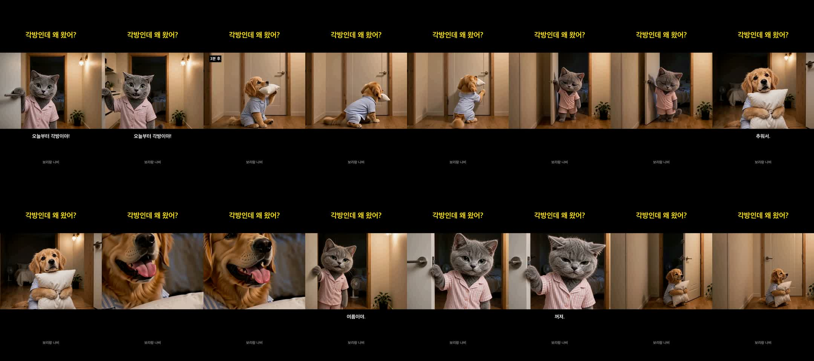

각방인데 왜 왔어? — 귀요미판 수정본
보리랑 나비 · 강아지 남편 + 고양이 아내 · 미공개 시험작
A. 마무리 «꺼져.»
B. 마무리 «머리 쓰지 마.»
고친 것
- 옷 — 집이니까 커플 여름 잠옷(남편 하늘색 줄무늬 · 아내 분홍 줄무늬)
- 문 — 복도·흰 문·벽등·화분을 한 장의 «세트 사진»으로 고정해 모든 컷에 같이 넣음
- 마무리 — «여름이야.» 뒤에 아내가 귀를 납작하게 하며 한마디 → 문 쾅, 남편 혼자 복도에
전체 흐름 (A판)
